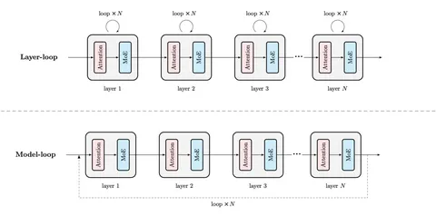
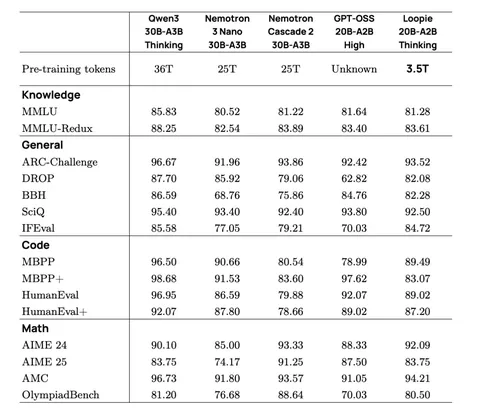
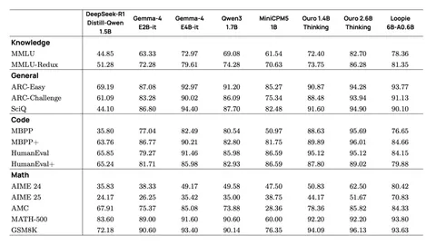

Сегодня обсудим статью, которая посвящена моделям Loopies, построенным на шеринге параметров между разными слоями.
Обычно у трансформерных моделей и свёрточных нейросетей отдельные параметры на каждом блоке, благодаря чему объём вычислений и число параметров масштабируются с глубиной. Это даёт гибкость — каждый блок может выполнять специфические задачи. Но при этом с ростом числа слоёв растёт и количество параметров, а значит, модель становится дороже хранить.
Выходом из этой ситуации может стать переиспользование весов по несколько раз за форвард — шеринг параметров. Так не нужно хранить много параметров, однако блок может принимать распределение данных с разной глубины, что усложняет задачу оптимизации.
Перспективность шеринга первым доказал метод ALBERT. В нём было два механизма: факторизация матрицы эмбеддингов и переиспользование одного трансформенного блока несколько раз. На этом принципе работают looped-модели — hidden state в них прогоняется R раз через один и тот же блок. Число параметров становится меньше, а количество вычислений не меняется.
Рекуррентность имеет и другие преимущества: hidden state проходит несколько шагов улучшения, эффективная глубина растёт без увеличения размера модели. В перспективе число шагов можно адаптировать под сложность запроса — если он простой, то прогонять один раз, а если сложный, то больше. Рекуррентность хорошо показывает себя на алгебраических задачах и задачах, связанных с пазлами.
Однако сравнения looped-моделей с не-looped-аналогами были не совсем честными. При том же размере модели делаются R прогонов, а, следовательно, в R раза больше вычислений. Соответственно, и обучать такую модель дольше. В плане оптимальности компьюта looped-модели уступали обычным трансформерам.
Авторы серии Loopie предлагают две модели: Loopie-20B-A2B и Loopie-6B-A0.6B. Архитектурно это Qwen3. В отличие от решений прошлого, здесь не вся модель прогоняется несколько раз, а каждый слой (верхняя схема на изображении 1). В пределах одного блока активации меняются не так сильно, к тому же это проще для чекпоинтинга. Также такой метод даёт потенциально большую гибкость: можно делать разное количество проходов на каждом слое.
Подход layer-loop проще для распределённого обучения, потому что повторения слоя остаются в одном pipeline stage, а параметры градиента могут использоваться локально. В то же время model-loop требует, чтобы вычисления синхронизировались внутри всей модели а первый блок должен уметь обрабатывать один или несколько полных проходов через модель.
Претрейн состоял из двух стадий. Сперва используют датасет Nemotron-CC-v2-HQ, а дальше дообучают на более качественных данных, делая упор на синтетику, STEM, код, математические рассуждения и веб-данные. Так получается базовая Loopie. На неё делают Supervised Pre-Training (SPT). Это похоже на SFT, лосс считается только по target-токенам, однако масштаб — как у претрейна: 2Т токенов. Контекст увеличивают и обучают довольно большими батчами примерно по 128М токенов. SPT, как отмечают авторы, улучшает способность модели к рассуждению.
На RL сначала делают математику, а потом программирование. Используют GSPO, ассиметричный клиппинг и динамическую фильтрацию промптов. Роллаут увеличивают с 32К до 64К.
По бенчам Loopie-20B примерно сопоставима с моделями вроде Qwen3, Nemotron 3 Nano и GPT-OSS (изображение 2). Казалось бы, не слишком большое достижение для 2026 года, однако стоит помнить, что у Loopie намного меньше параметров. Loopie-6B в своей «весовой категории» также показывает себя достойно — особенно в задачах, связанных с математикой (изображение 3).
Разбор подготовил
Душный NLP


